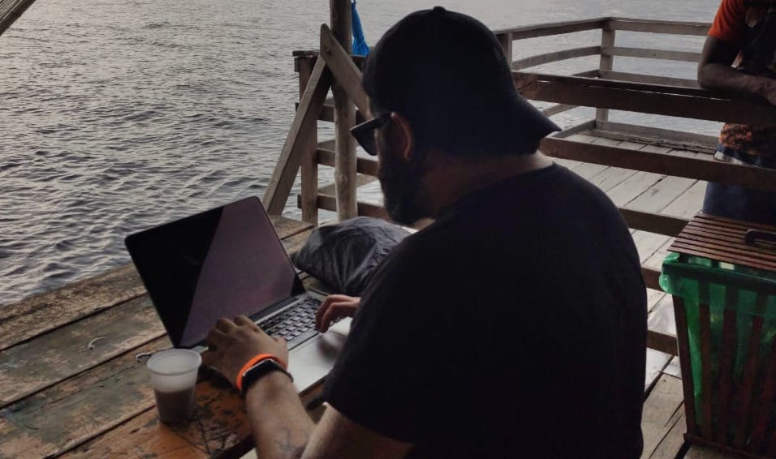

Paolo Oliveira
Researcher and System Engineer |
AboutI'm a system engineer and researcher with physics, synthetic biology, embedded systems and robotics background. I've been researching many fields over the years, specially embedded systems, industrial network, communication protocols, artificial inteligence and many subfields of biology, specially CRISPR gene editing and bioinformatics, and, finally, I love data! (extract, parse, analyze, automate...). I have a lot of experience on Control Theory, Sensor data acquisition, Digital Filters, Computer Vision, Path Planing and ROS for various drones(on earth and air) and, latelly, I've been doing a lot of gene editing, virus research, biological simulations bot on wet and dry lab. I've been workig as Backend, Infrastructure and Security Engineer on various companies over the years from various domains (power, payments, games, medical...) where I've been applying my knowledge and experience of fault tolerance and ream-time systems design/implementation/management, automation and architecture to help the company grow stronger. I have been working with C and assembly(for x86, pic, arm and z80) since 1998 and Python since 2006 ( still my main language). I'm a huge fan of erlang, lisp and its flavors(elixir and lfe for erlang, clojure for lisp) and I try, whenever I can, to write hardware binding and industrial communication protocol for them. Since 2015, I've been working a lot with ruby and node.js not just for web but as integration tools, and Golang, since 2016. I, also, love reverse engineering software and hardware. It is the kind of things I do when I get free time when I'm not palying with CRISPR. I blog here to reflect on academia, research, security, and myself. I post a lot of pictures of my everyday life, my trips, conferencies, my passions and random things on Instagram. I'm also on Twitter, Researchgate, Google Scholar, ORCID, Scopus, Publons, Keybase and all my public codes may be found in Github. PublicationsInfrastructure for Integration of Legacy Electrical Equipment into a Smart-Grid Using Wireless Sensor Networks. Araújo, Paulo Régis C.; Filho, Raimir Holanda; Rodrigues, Joel J. P. C.; Oliveira, João P. C. M.; Braga, Stephanie A. Sensors 2018. Volume 18, Issue 5. Article 1312. ISSN 1424-8220. 2018. Protocolos IPFS e IPNS como meio para o controle de botnet: prova de conceito.. Bruno Macabeus M. de Aquino, Marcus Vinicius L. de Lima, João Paolo Cavalcante M. de Oliveira, Cidcley Teixeira de Souza.Workshop de Segurança Cibernética em Dispositivos Conectados (WSCDC - SBRC 2018). São Carlos, Brazil. Proceedings. Middleware for integration of legacy electrical equipment into smart grid infrastructure using wireless sensor networks. Araújo, Paulo Régis C.; Holanda Filho, Raimir, Rodrigues, Joel J. P. C.; Oliveira, J. Paolo C. M.; Braga, Stephanie A. International Journal of Communication Systems. 2017. Wiley Publishing. Robolt-0: Uma Plataforma Robótica Multi-Aplicação, Extesível, Open-Source e de Baixo Custo. A. F. Sousa, R. R. M. de Santana, J. P. C. M. Oliveira, R. C. Sá. XI CONNEPI. 2016. Alagoas, Brazil. Integração de Medidores de Energia Elétrica Residenciais a uma estrutura de Smart Grid usando Redes de Sensores Sem Fio.. Braga, Stéphanie A.; Oliveira, J. P. C. M.; De Araújo, Paulo Régis Carneiro; Teixeira, Rogers G; De Souza, Vagner Henrique.XXXIV Simpósio Brasileiro de Telecomunicações e Processamento de Sinais (SBrT 2016). Santarem, Brazil. Proceedings. Desenvolvimento, Metodologia de Testes e Simulação de um Quadrotor.. Carlos, Bárbara B.; Oliveira, J. Paolo C. M.; Sá, Rejane C,; Rodrigues, A. Wendell R.; Alexandria, Auzuir R. Monstra Nacional de Robótica (MNR 2015). Uberlândia, Brazil. Proceedings. Implementing Smart Grid with a CIM-oriented Integration and Data Acquisition Gateway. Oliveira, João Paolo C. M.; De Souza, Vagner Henrique; Rodrigues, Antonio Wendell De Oliveira; Sá, Rejane Cavalcante; De Araúzjo, Paulo Régis Carneiro. 8th Latin American Network Operations and Management Symposium (LANOMS 2015). João Pessoa, Brazil. Proceedings ISBN:978-1-4673-9408-6. Smart Middleware Device for Smart Grid Integration. Oliveira, João Paolo C. M.; Rodrigues, Antonio Wendell De Oliveira; Sá, Rejane Cavalcante; De Araújo, André Luiz Carneiro. 24th IEEE International Symposium on Industrial Electronics (ISIE 2015). Buzios, Brazil. Context-Aware Query for High-Voltage Transmission Line Fault Detection using Wireless Sensor Network. De Araújo, Paulo Régis C.; Holanda, Raimir; Rodrigues, Antonio Wendell De Oliveira; De Araújo, André Luiz Carneiro; Moraes Filho, José De Aguiar; Brayner, Angelo; Oliveira, João Paolo C. M. 2015 IEEE Sensors Applications Symposium (SAS 2015). Zadar, Croatia. A Middleware for the Integration of Smart Grid Elements with WSN Based Solutions. De Araújo, Paulo Régis C.; Holanda, Raimir; Rodrigues, Antonio Wendell De Oliveira; De Araújo, André Luiz Carneiro; Moraes Filho, José De Aguiar; Oliveira, João Paolo C. M. International Journal of Distributed Sensor Networks (Online), v. 2014, p. 1-15, 2014. Modelagem, Implementação e Simulação de um Protocolo de Comunicação em Tempo Real para uma Rede de Sensores Sem Fio. Oliveira, J. Paolo C. M.; Sousa, S. S.; Araujo, P. R. C.; De O. Rodrigues, A. Wendell; Araujo, A. L. C. IX CONNEPI/Journal INNOVER, São Luís, p. 27 - 36, 29 dez. 2014. Gateway de Protocolos Legados para Smart Grid: Uma Abordagem Baseada Em Linguagem Python.Oliveira, J. P. C. M.; De O. Rodrigues, A. Wendell. In: XI Encontro de Iniciação Científica(ENICIT), 2013, Iguatú. XI Encontro de Iniciação Científica(ENICIT), 2013. Misc
|